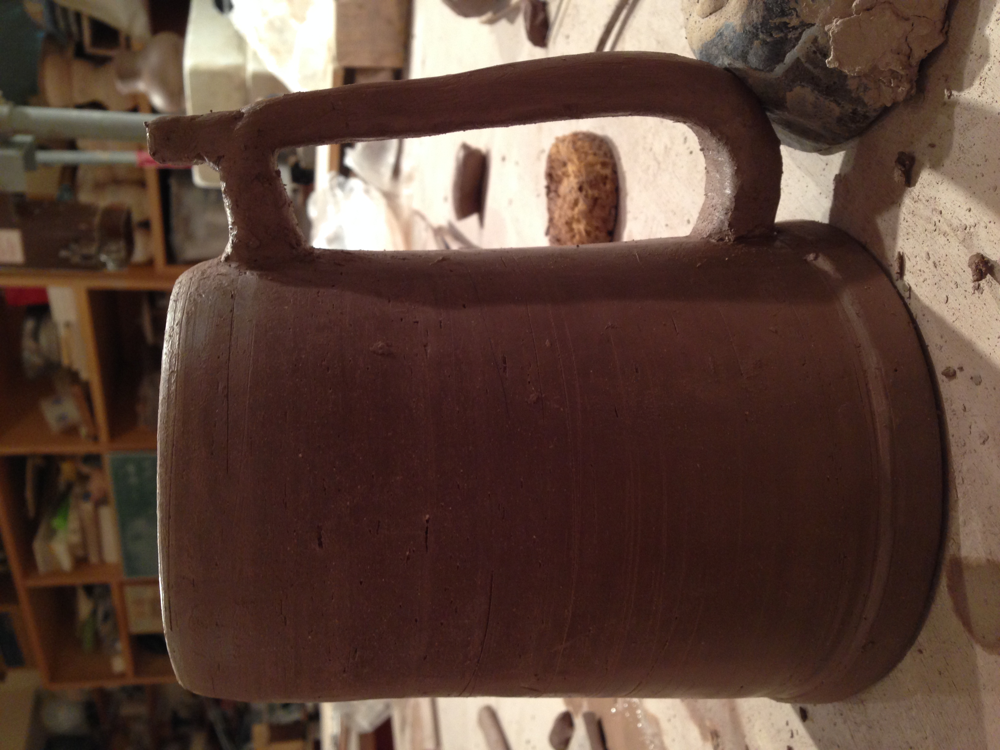
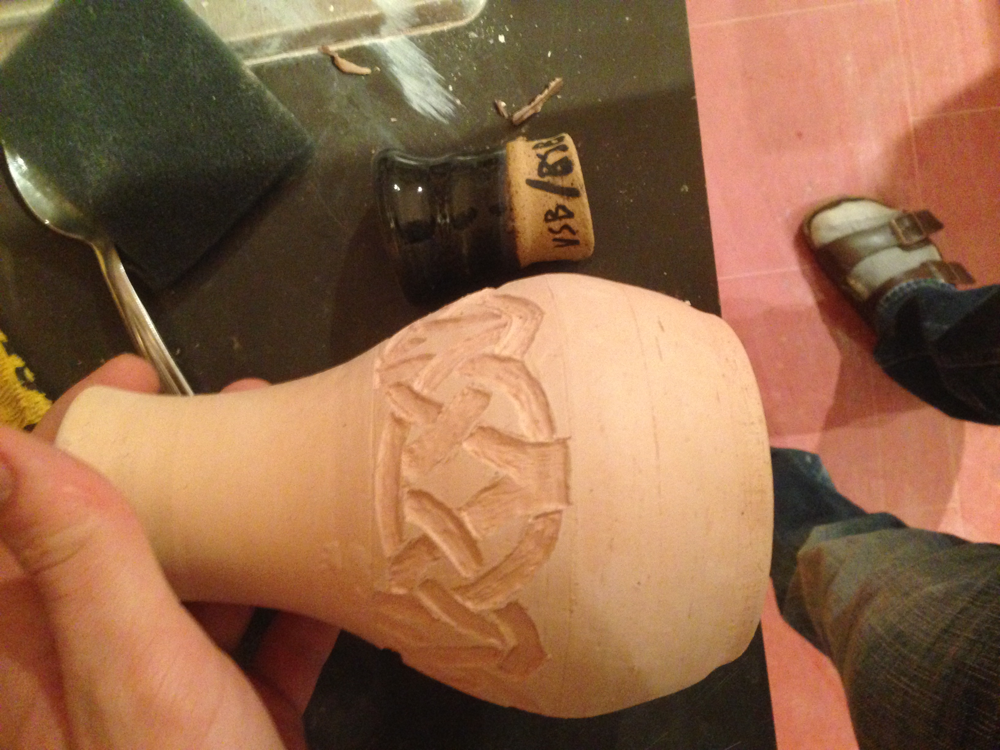
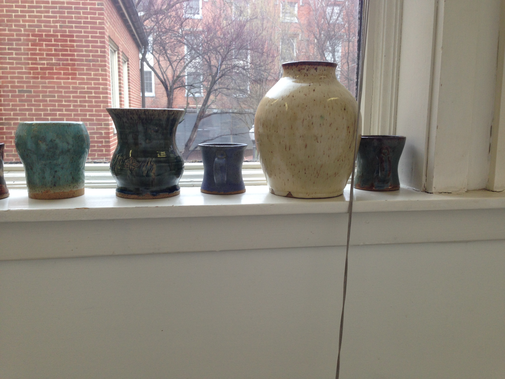
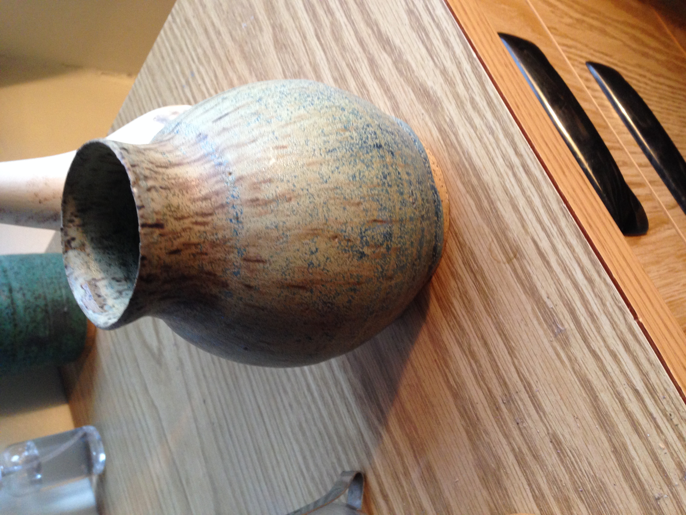
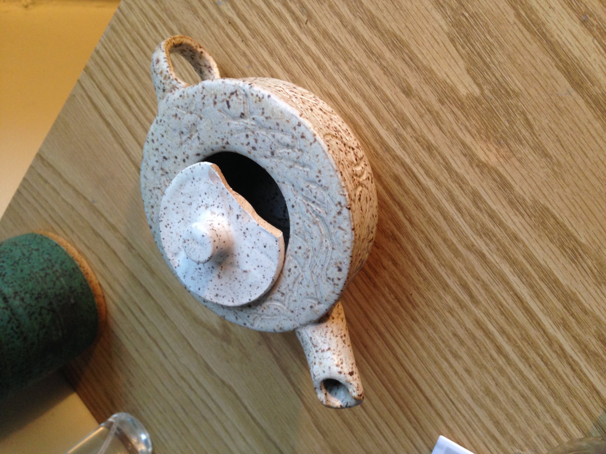
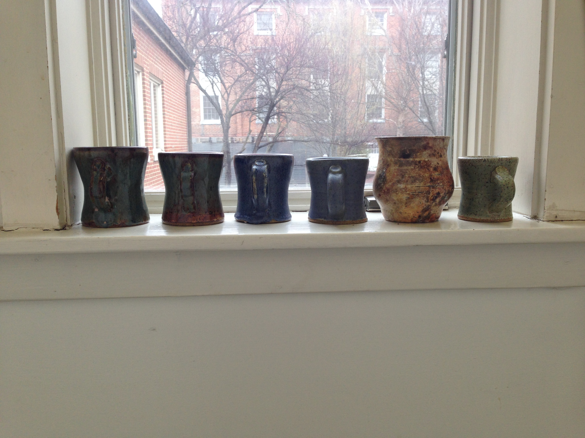
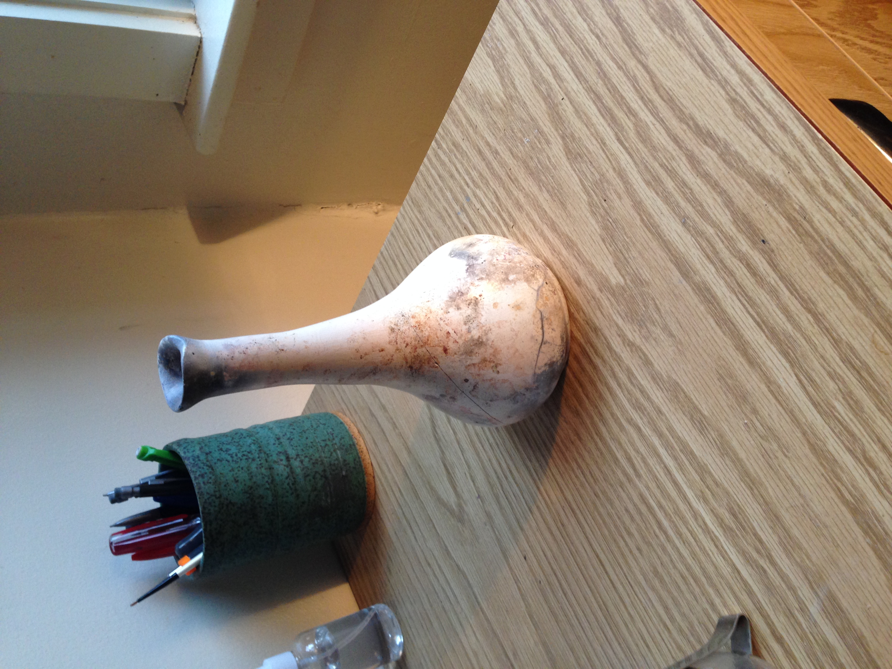
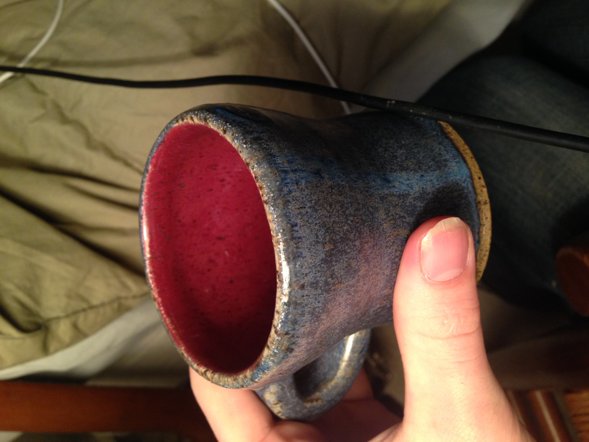
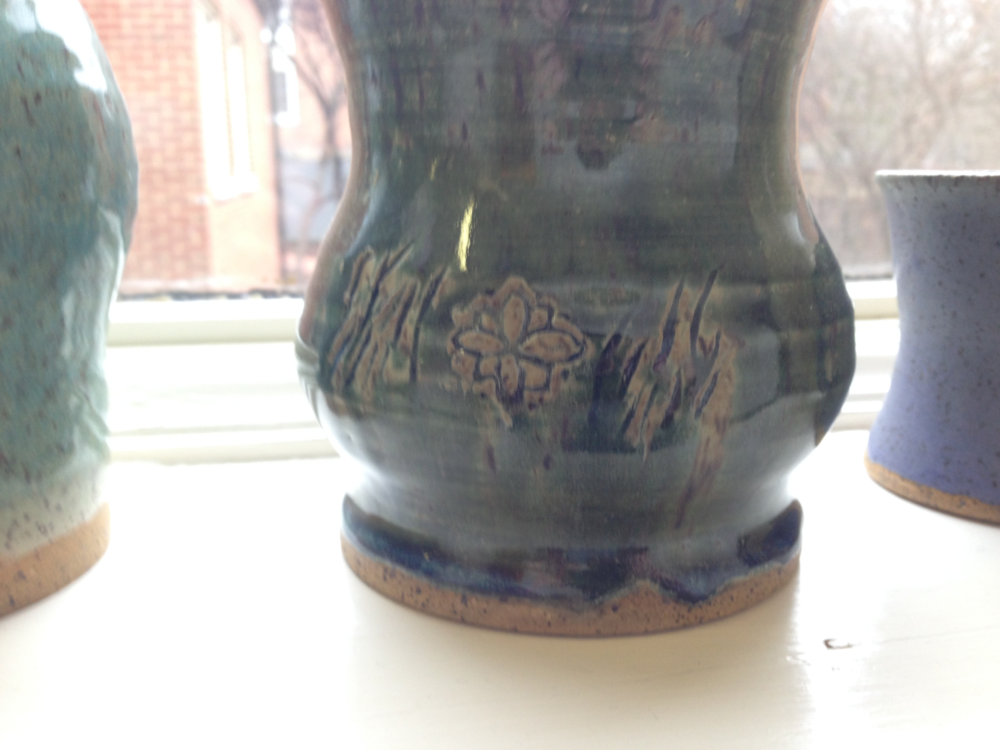
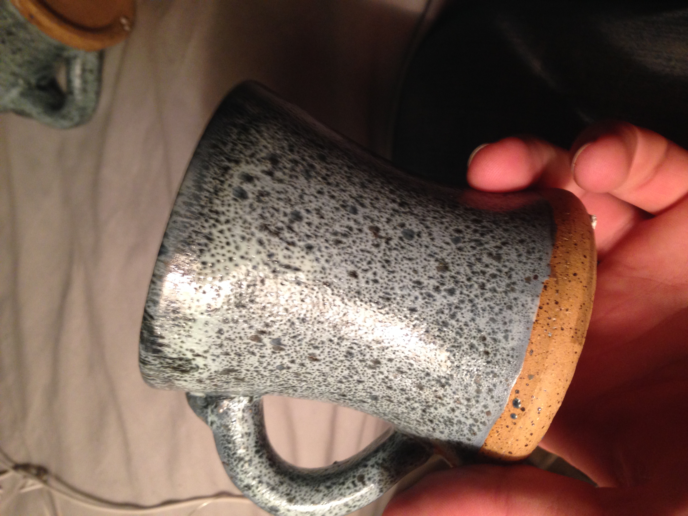

Jen's History of Pottery!
Throwing
Bisque firing
Glazing
Finished pieces
Throwing

this is what pottery looks like when it's drying!
The z index can govern how text overlaps too!
Bisque firing
Bisque firing to a lower tempurature to prevent cracking
.7em used decreasing font size down lists
Bisque firing to a lower tempurature to prevent cracking
100% set the percentage of the font size it inherits
Bisque firing to a lower tempurature to prevent cracking
1rem used to reset to the page default
Bisque firing to a lower tempurature to prevent cracking
50 px sets the absolute size of the element in pixels; use if you need to preserve a certain size
Bisque firing to a lower tempurature to prevent cracking
1cm; used for a more intuative absolute value
Bisque firing to a lower tempurature to prevent cracking
1vw used to display the same relative size on all device screens
Glazing
Finished pieces








